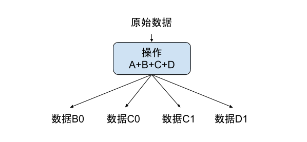

- 00 开篇词 从这里开始，带你走上硅谷一线系统架构师之路.md.html
- 01 为什么MapReduce会被硅谷一线公司淘汰？.md.html
- 02 MapReduce后谁主沉浮：怎样设计下一代数据处理技术？.md.html
- 03 大规模数据处理初体验：怎样实现大型电商热销榜？.md.html
- 04 分布式系统（上）：学会用服务等级协议SLA来评估你的系统.md.html
- 05 分布式系统（下）：架构师不得不知的三大指标.md.html
- 06 如何区分批处理还是流处理？.md.html
- 07 Workflow设计模式：让你在大规模数据世界中君临天下.md.html
- 08 发布_订阅模式：流处理架构中的瑞士军刀.md.html
- 09 CAP定理：三选二，架构师必须学会的取舍.md.html
- 10 Lambda架构：Twitter亿级实时数据分析架构背后的倚天剑.md.html
- 11 Kappa架构：利用Kafka锻造的屠龙刀.md.html
- 12 我们为什么需要Spark？.md.html
- 13 弹性分布式数据集：Spark大厦的地基（上）.md.html
- 14 弹性分布式数据集：Spark大厦的地基（下）.md.html
- 15 Spark SQL：Spark数据查询的利器.md.html
- 16 Spark Streaming：Spark的实时流计算API.md.html
- 17 Structured Streaming：如何用DataFrame API进行实时数据分析_.md.html
- 18 Word Count：从零开始运行你的第一个Spark应用.md.html
- 19 综合案例实战：处理加州房屋信息，构建线性回归模型.md.html
- 20 流处理案例实战：分析纽约市出租车载客信息.md.html
- 21 深入对比Spark与Flink：帮你系统设计两开花.md.html
- 22 Apache Beam的前世今生.md.html
- 23 站在Google的肩膀上学习Beam编程模型.md.html
- 24 PCollection：为什么Beam要如此抽象封装数据？.md.html
- 25 Transform：Beam数据转换操作的抽象方法.md.html
- 26 Pipeline：Beam如何抽象多步骤的数据流水线？.md.html
- 27 Pipeline I_O_ Beam数据中转的设计模式.md.html
- 28 如何设计创建好一个Beam Pipeline？.md.html
- 29 如何测试Beam Pipeline？.md.html
- 30 Apache Beam实战冲刺：Beam如何run everywhere_.md.html
- 31 WordCount Beam Pipeline实战.md.html
- 32 Beam Window：打通流处理的任督二脉.md.html
- 33 横看成岭侧成峰：再战Streaming WordCount.md.html
- 34 Amazon热销榜Beam Pipeline实战.md.html
- 35 Facebook游戏实时流处理Beam Pipeline实战（上）.md.html
- 36 Facebook游戏实时流处理Beam Pipeline实战（下）.md.html
- 37 5G时代，如何处理超大规模物联网数据.md.html
- 38 大规模数据处理在深度学习中如何应用？.md.html
- 39 从SQL到Streaming SQL：突破静态数据查询的次元.md.html
- 40 大规模数据处理未来之路.md.html
- FAQ第一期 学习大规模数据处理需要什么基础？.md.html
- FAQ第三期 Apache Beam基础答疑.md.html
- FAQ第二期 Spark案例实战答疑.md.html
- 加油站 Practice makes perfect！.md.html
- 结束语 世间所有的相遇，都是久别重逢.md.html
- 捐赠
24 PCollection：为什么Beam要如此抽象封装数据？
你好，我是蔡元楠。
今天我要与你分享的主题是“为什么Beam要如此抽象封装数据”。
很多人在刚开始接触Apache Beam的时候，都会觉得这里面的概念太抽象了。什么PCollection、PValue、Transform……这都是些什么？尤其是PCollection，完全和先前的技术知识找不到对应。
确实如此。同样作为数据的容器，PCollection却并不像Python/Java的List或者C++的vector。PCollection是无序的，Beam对于PCollection中元素的处理顺序不作任何保证。所以，你不可能说“我想处理PCollection中的第二个元素”，因为它就没有“第几个”这种概念。
PCollection也不像Python/Java的Set，或者C++的unordered_set，PCollection不一定有固定的边界。所以，你也不能指望去查找一个PCollection的大小。在PCollection的世界里，也没有“固定大小”这样的概念。
作为程序员，我很讨厌重复造轮子，尤其是新瓶装旧酒。的确，有很多开发者为了体现自己项目的复杂度，故意强行引进了很多概念，让大家都似懂非懂的。这就像是为了体现自己知道茴香豆的“茴”有几种写法一样，故意用另一种写法来体现自己“有文化”。
那么Apache Beam引进这么多概念，是不是也是故意强行造轮子呢？答案是否定的。这一讲，我们就要分析PCollection为什么会如此设计。
在之前的章节中，我们已经讲到了Apache Beam的“爷爷”——FlumeJava产生的背景。
当时Google的工程师们发现MapReduce使用起来并没有很方便。如果计算过程都能够分解成map、shuffle、reduce步骤的话，MapReduce是非常能胜任的。
但是，很多现实世界中的问题，往往需要一系列的map或reduce步骤。这样的数据流水线就需要额外的代码用来协调这些map或reduce步骤。也需要一些额外的代码去管理分步的map/reduce步骤产生的一些中间结果。以至于新的开发者很难理解复杂的流水线。
清楚这样的背景对于理解Apache Beam的PCollection起源很有帮助。因为，这个项目起源只是为了提供比MapReduce更好的开发体验，最终的运算引擎仍然是MapReduce。
为什么需要PCollection？
那么，为什么Beam需要PCollection这样一个全新的抽象数据结构呢？
我们知道，不同的技术系统有不同的数据结构。比如，C++里有vector、unordered_map，安卓有ListView。相比它们而言，其实Beam的数据结构体系是很单调的，几乎所有数据都能表达为PCollection。
PCollection，就是Parallel Collection，意思是可并行计算的数据集。如果你之前学习了Spark的章节，就会发现PCollection和RDD十分相似。
在一个分布式计算系统中，我们作为架构设计者需要为用户隐藏的实现细节有很多，其中就包括了数据是怎样表达和存储的。
这个数据可能是来自于内存的数据（内部可能只是由一个C++ array存储）；也有可能是来自外部文件（由几个文件存储）；或者是来自于MySQL数据库（由数据库的行来表达）。
如果没有一个统一的数据抽象的话，开发者就需要不停地更改代码。比如，在小规模测试的时候用C++ vector，等到了真实的生产环境，我再换MySQL row。沉溺于这样的实现细节会让开发者无法集中注意力在真正重要的事情上，那就是“你想怎样处理数据”。
清楚了这些，你就能明白我们需要一层抽象来表达数据，而这层抽象就是PCollection。
PCollection的创建完全取决于你的需求。比如，在测试中PCollection往往来自于代码生成的伪造数据，或者从文件中读取。
Python
lines = (p
| beam.Create(['To be, or not to be: that is the question. ']))
lines = p | 'ReadMyFile' >> beam.io.ReadFromText('gs://some/inputData.txt'
Java
PCollection<String> lines = p.apply(
"ReadMyFile", TextIO.read().from("protocol://path/to/some/inputData.txt"));
为什么PCollection需要Coders？
与普通编程相比，PCollection的另一个不同之处是，你需要为PCollection的元素编写Coder。例如，你有一个自己的类MyClass，那么PCollection 一定需要实现Coder 。
刚开始使用Beam时，你可能会感觉这很不方便。例如，你只是要去读取MySQL的一个表，也得为此实现Coder。
Coder的作用和Beam的本质紧密相关。因为你的计算流程最终会运行在一个分布式系统。所以，所有的数据都有可能在网络上的计算机之间相互传递。而Coder就是在告诉Beam，怎样把你的数据类型序列化和逆序列化，以方便在网络上传输。
Coder需要注册进全局的CoderRegistry中，简单来说，是为你自己的数据类型建立与Coder的对应关系。不然每次你都需要手动指定Coder。
Python
apache_beam.coders.registry.register_coder(int, BigEndianIntegerCoder)
Java
PipelineOptions options = PipelineOptionsFactory.create();
Pipeline p = Pipeline.create(options);
CoderRegistry cr = p.getCoderRegistry();
cr.registerCoder(Integer.class, BigEndianIntegerCoder.class);
为什么PCollection是无序的？
讲完为什么PCollection需要Coder之后，我们再来看下，为什么PCollection是无序的。
PCollection的无序特性其实也和它的分布式本质有关。一旦一个PCollection被分配到不同的机器上执行，那么为了保证最大的处理输出，不同机器都是独立运行的。所以，它的执行顺序就无从得知了。可能是第一个元素先被运行，也可能是第二个元素先被运行。所以，肯定不会有PCollection[2]这样的运算符。
为什么PCollection没有固定大小？
无序也就算了，为什么PCollection还没有固定大小呢？
前面的章节中讲到过，Beam想要统一批处理和流处理，所以它要统一表达有界数据和无界数据。正因为如此，PCollection并没有限制它的容量。如前面所说，它可能表达内存上的一个数组，也可能表达整个数据库的所有数据。
一个PCollection可以是有界的，也可以是无界的。一个有界的PCollection表达了一个已知大小的固定的数据集。一个无界的PCollection表达了一个无限大小的数据集。事实上一个PCollection是否有界，往往取决于它是如何产生的。
从批处理的数据源中读取，比如一个文件或者是一个数据库，就会产生有界的PColleciton。如果从流式的或者是持续更新的数据库中读取，比如pub/sub或者kafka，会产生一个无界的PCollection。
但是，PCollection的有界和无界特性会影响到Beam的数据处理方式。一个批处理作业往往处理有界数据。而无界的PCollection需要流式的作业来连续处理。
在实现中，Beam也是用window来分割持续更新的无界数据。所以，一个流数据可以被持续地拆分成不同的小块。这样的处理方式我们会在实战部分展开。
如何理解PCollection的不可变性？
在普通编程语言中，大部分数据结构都是可变的。
Python
Alist = []
alist.append(1)
C++
Std::vector<int> list;
list.push_back(1);
但是PCollection不提供任何修改它所承载数据的方式。修改一个PCollection的唯一方式就是去转化(Transform)它，下一讲会展开讲Transformation。
但是在这一讲，我们需要理解的是，Beam的PCollection都是延迟执行（deferred execution）的模式。也就是说，当你下面这样的语句的时候，什么也不会发生。
Java
PCollection<T1> p1 = ...;
PCollection<T2> p2 = doSomeWork(p1);
这样的语句执行完，p2这个PCollection仅仅会记录下自己是由doSomeWork这个操作计算而来的，和计算自己所需要的数据p1。当你执行写完100行的beam的运算操作，最终的结果仅仅是生成了一个有向无环图（DAG），也就是执行计划（execution plan）。
为什么这么设计呢？如果你记得我们在专栏第一部分讲到的大规模数据框架设计，可能会有印象。这样的有向无环图是框架能够自动优化执行计划的核心。
类似图中这样的数据处理流程，在Beam获知了整个数据处理流程后，就会被优化成下图所示。

这样的优化，在Beam中被称为sibling fusion。类似的操作优化我们后面会继续介绍。在这个小标题下，我想用这个优化的例子说明，PCollection下的数据不可变是因为改变本身毫无意义。
例如，在刚才这个例子中，你会发现，优化后的执行计划里已经没有了数据A0。因为，Beam发现数据A0作为中间结果并不影响最终输出。另外，由于Beam的分布式本质，即使你想要去修改一个PCollection的底层表达数据，也需要在多个机器上查找，毫无实现的价值。
小结
这一讲我们介绍了整个Beam核心数据结构PCollection的设计思想。尤其是分析了PCollection的几大特性为什么是这么设计的。它的特性包括Coders、无序性、没有固定大小、不可变性等。在每个特性下面我们也介绍了几个例子或者代码示例，希望能帮助你加深印象。
思考题
PCollection的设计是否能表达你的大规模数据处理场景呢？
欢迎你把答案写在留言区，与我和其他同学一起讨论。如果你觉得有所收获，也欢迎把文章分享给你的朋友。
© 2019 - 2023 Liangliang Lee. Powered by gin and hexo-theme-book.